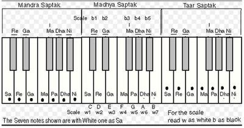
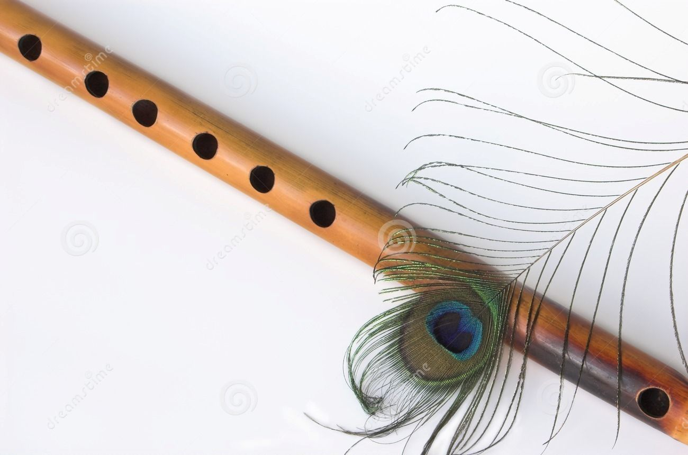

Playing different Octaves
We are now familiar with the concept of Shuddh, komal and Teevra Swaras. Now we are going to learn about Octaves(Saptak) and its types in Indian Music and how to play them on Bansuri.
What is a Saptak or an Octave?
When a set of seven notes is played in the order it is called a Saptak(i.e Sa, Re, Ga, ma, Pa, Dha, Ni). When we sing notes of a saptak, instead of 7 notes we sing 8 notes with the 8th note being Sa of 2 times the frequency of the 1st Sa.
In Western Music, the combination of these 7 notes where the first note repeats itself as the eight, is called an Octave which means comprising of 8 notes.

Types of Saptak in Indian Classical Music
- Madhya Saptak
- Mandr Saptak
- Taar Saptak
The normal tone of human voice or Bansuri, which is neither high or low, it is called Madhya Saptak or the middle octave.This is represented as S,R,G,m,P,D,N without any use of symbol.
 Madhya Saptak of C# Scale
Madhya Saptak of C# Scale
The Octave below the madhya saptak is refered to as Mandr Saptak or the low Octave.The Sa of Mandr Saptak in half of the frequency of the Sa of Madhya Sapta. This is represented by a sign of apostrophe or dot on the left side of the note.For Example, 'Sa / .Sa
 Mandr Saptak of C# Scale
Mandr Saptak of C# Scale
The Octave higher than the Madhya Saptak is Taar Saptak or Higher Octave. The notes are high and sharp. The frequency of the Sa of Taar Saptak is twice the frequency of Sa of the Madhya Saptak. This is represented by a sign of apostropheor dot on the right side of the note. For Example, Sa' / Sa.
 Taar Saptak of C# Scale
Taar Saptak of C# Scale
How to play different Saptaks on Bansuri?
There are 3 saptaks in Indian Classical Music, but a normal Bansuri is only able to produce 2 and a half Octaves. But in general playing we use only 2 Octaves since playing the other half octave is not easy for Beginners.
Hence, We can easily play the Madhya Saptak , First half Taar Saptak and the Last half Mandr Saptak. Please Note that it is possible to play the second half of Taar Saptak on flute but a lot of practise is needed for it and we will learn to play it later.
Hence the notes we will be playing are S R G m P D N S, S' R' G' m' and 'P 'D 'N .
Playing Madhya Saptak
Below are the notes for your reference.
Play Sa, Re, Ga, ma the normal way you do by normal breathing pressure.
Pa, Dha, Ni and ŚA of this Saptak needs to be played by increasing the breathing pressure. This can be done by rounding your lips a little.
Practise it at least 10 times before moving on.
Playing the first half of Taar Saptak
Below are the notes for your reference.
By rounding your lips like you are pronouncing "ooo", blow a huge volume of air in the blowing hole. Due to increased breathing pressure, the Sa, Re, Ga and ma of Taar Saptak can be played.
In the similar way, the notes Pa, Dha, Ni of the Taar Saptak can be played, but this required intense breathing pressure which can be exhausting and is not easy.
Playing the Second half of Mandr Saptak
Below are the notes for your reference.
Flatten your Lips,and decrease your breathing pressure. Blow genlty and we can produce the notes Pa DHA AND Ni of the Mandr Saptak.
On normal middle flute, it is not possible to produce Sa, Re, Ga and Ma of Mandr Saptak. However, some specially designed flutes can accomodate all the three Saptaks.
Practise playing these 2 saptaks on your flute. Stay Calm, with pateince , I believe that you can achieve it.
Practise more and more and will meet in the next lesson, till then Happy Fluting!!
